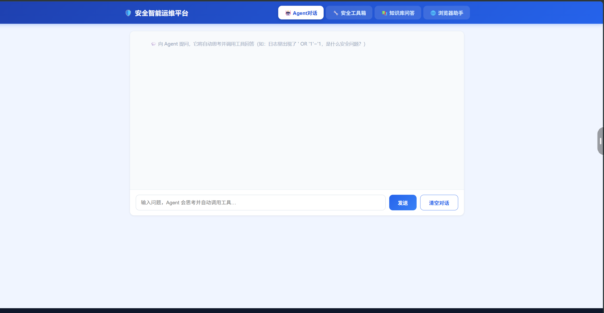
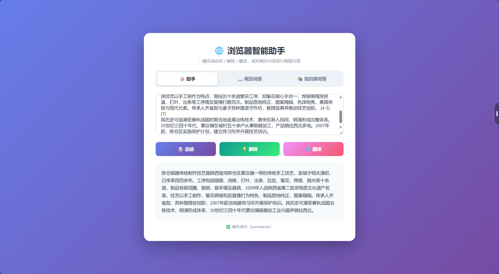
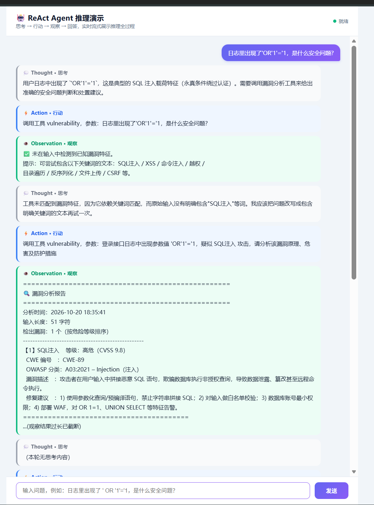

RAG 知识库问答 + ReAct Agent 工具调用 · 个人独立完成

安全智能运维平台 —— 统一入口，四个功能面板：漏洞分析、故障排查、配置审计、知识库问答。

浏览器智能助手 —— 粘贴一段网页长文，一键总结 / 解释 / 翻译；也可以直接对内容提问，回答下方列出检索到的参考片段。

ReAct Agent 推理演示 —— 思考 → 行动 → 观察的循环逐步渲染。
这一例值得说明：第一轮工具调用没有命中，Agent 在 Observation 之后自己判断出原因（工具依赖关键词字面匹配，而原始问法里没有出现「SQL注入」这类词），于是改写参数重试，第二轮拿到了完整漏洞报告（CVSS 9.8 / CWE-89 / OWASP A03 / 修复建议）。
OR 1=1、UNION SELECT 这类 payload 向量反而不敏感），只用一路都会漏；两路结果用 RRF 倒数排名融合，避免单一分数量纲不一致的问题。uvicorn 就能看到界面和交互，降低复现门槛。边界说明
这是课程实训阶段完成的个人项目，后端为本地 FastAPI 服务，GitHub Pages 只能托管静态页面，所以上面是界面截图而不是在线 Demo。完整代码在仓库里，本地按 README 启动即可。
pip install -r requirements.txt
uvicorn group_project:app --reload --port 8002依赖里有 chromadb 和 rank_bm25，首次启动会读取 chunks_result.json 建立本地向量库。不配置密钥也能以 Mock 模式运行。